All Articles
12 experiments, 12 lessons. Filtered by what actually worked.

Year Review
Omad Diet Social Costs 2026
I ate one meal a day for six months. OMAD. One Meal A Day. It worked for weight loss. I lost 22 pounds. My energy was stable. My focus was sharp. And ...

Year Review
Austin Heat Wave Fasting Break
Why I Broke My Fast at 2 PM During Austin's Hottest Day on Record — And Why My Body Thanked Me for It By Dr. Marcus Whitfield, Austin, TX Published: J...

Year Review
Omad 30 Days Lost Muscle Not Fat
The scale said I lost 6 pounds. I was thrilled. Six pounds in 30 days! The internet was right. One meal a day was the secret. The fasting subreddits h...

Year Review
The 72 Hour Fast I Failed At Hour 54
The 72-Hour Fast I Failed at Hour 54 (And Why I Am Glad I Did) I started the fast on a Thursday at 8:00 PM because I am an idiot and I thought the wee...

Year Review
I Tried Omad For 30 Days
I Tried OMAD for 30 Days. My Doctor Asked If I Was Okay. One meal a day. That's what OMAD means. It's the extreme end of intermittent fasting — the 23...

Year Review
I Tried a Cold Plunge After My Morning Fast. My Body Did Not Expect This.
48-degree water. 16-hour fast. My nervous system got a wake-up call that no meditation could prepare me for.

Year Review
Why I Stopped Eating at 6 PM During Austin's 110°F Summer (And What It Did to My Sleep)
I moved my eating eating-window-planner to survive the heat. My body had opinions. So did my sleep fasting-session-tracker.

Year Review
I Joined a Sound Bath Session at BATHE on an Empty Stomach. Here's What Happened.
Crystal bowls, an empty stomach, and a nervous system that got rebooted. I cried. I didn't know why.

Year Review
The Sober Curiosity Movement in Austin Is Making Fasting Easier (And Weirder)
Mocktails, kombucha, and a secret club of people who don't drink. Turns out sobriety and fasting are the same thing.

Year Review
I Tracked My Gut Microbiome for 30 Days While Fasting. The Results Were Gross.
Poop in a tube. Mail it off. Get a bar chart of bacteria. My gut diversity went from 62 to 74 in 30 days.

Year Review
What SXSW Did to My Fasting Schedule (And How I Recovered in 7 Days)
Free beer at 2 PM. Pizza at midnight. Three pounds gained. Here's my 7-day recovery plan that actually worked.

Year Review
What 365 Days of Fasting Data Looks Like (My Year in Review) | Sarah's Fasting Journal
One year. 365 days. I have data for 312 of them. Here's what it looks like when you visualize it.

Year Review
I Replaced My Morning Coffee With Breathwork for 21 Days. My Brain Felt Different.
No coffee before noon. Just box breathing and a yoga mat. Day three was brutal. Day fourteen was a revelation.
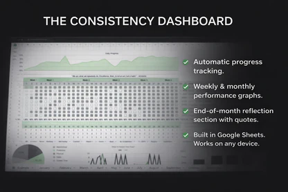
Year Review
My Fasting Consistency Score Dropped to 43% Last Month. Here's Why. | Sarah's Fasting Journal
Last month, my fasting consistency score was 43%. The month before? 78%. What happened? Life happened.

Year Review
The Day I Did 108 Sun Salutations Fasted at Casa de Luz (And Couldn't Walk for 3 Days)
Summer solstice. 108 sun salutations. Completely fasted. I finished. Then I couldn't walk for three days.
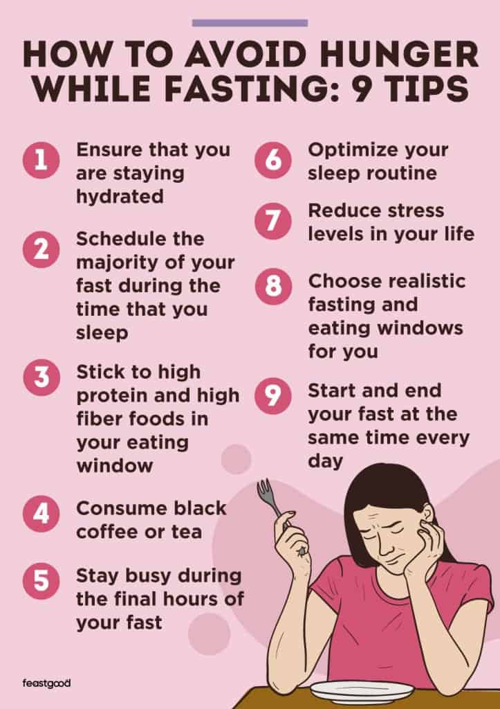
Year Review
How I Handle Hunger During a Fast (Without Cheating) | Sarah's Fasting Journal
Hunger is the enemy of fasting. Not because it's dangerous — it's not — but because it makes you want to quit.

Year Review
Why I Started Fasting With the Moon Cycles (And Why My Roommate Thinks I'm Crazy)
Full moon makes me hungry. New moon makes me effortless. My roommate calls me a witch. The data disagrees.
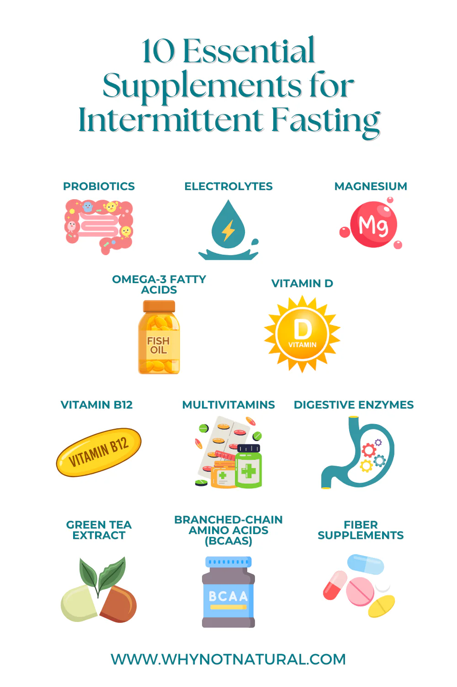
Year Review
The One Supplement That Actually Helped My Fasts (And Three That Didn't) | Sarah's Fasting Journal
I've tried a lot of supplements. Like, a lot. Most of them did nothing noticeable. Three actually made things worse. One genuinely helped.
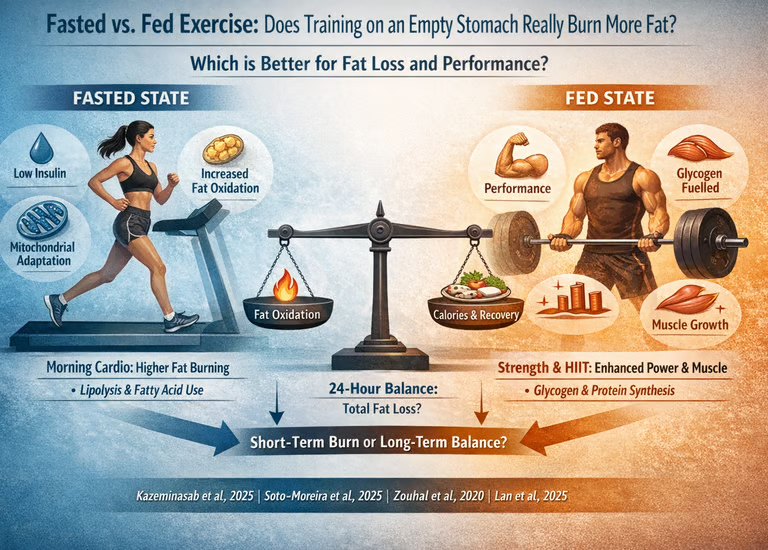
Year Review
I Tried Working Out Fasted for 30 Days. Here's What Happened. | Sarah's Fasting Journal
Day 1, I felt weak. Like, embarrassingly weak. I dropped my usual weights by 20% and still struggled.
Year Review
I Ate Only Torchy's Tacos for a Week to Break My Fast. My Metabolism Was Confused.
One taco a day. Seven days. Austin's most ridiculous experiment. My body adapted. My roommate called me Taco Girl.
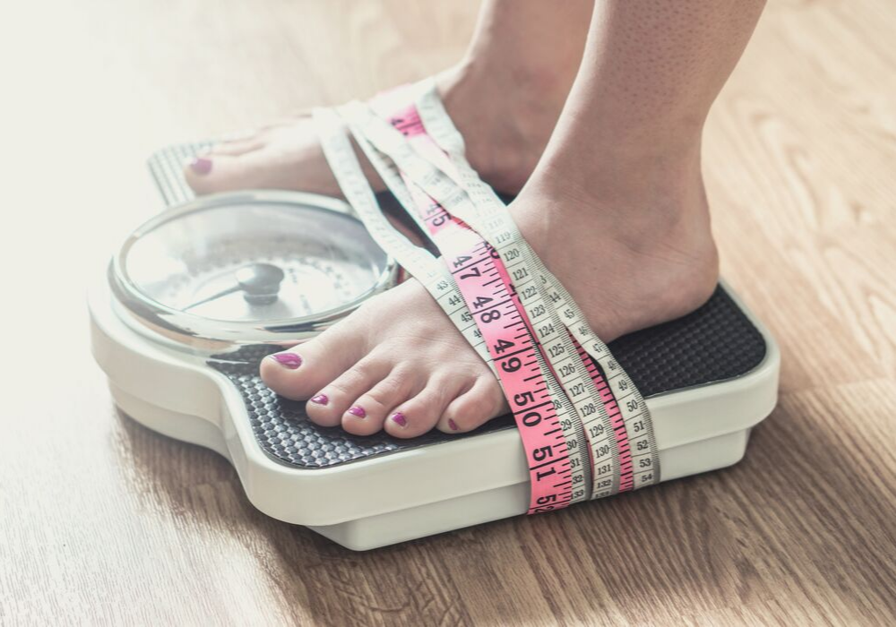
Year Review
Why I Stopped Weighing Myself Every Day (And Started Tracking Trends Instead) | Sarah's Fasting Journal
I was actually being neurotic. The problem with daily weighing is that weight fluctuates. A lot.

Year Review
My Doctor Told Me to Stop Fasting. Here's the Data I Showed Her.
She said fasting was dangerous. I showed her my insulin sensitivity, HbA1c, and DEXA scan. She changed her mind.
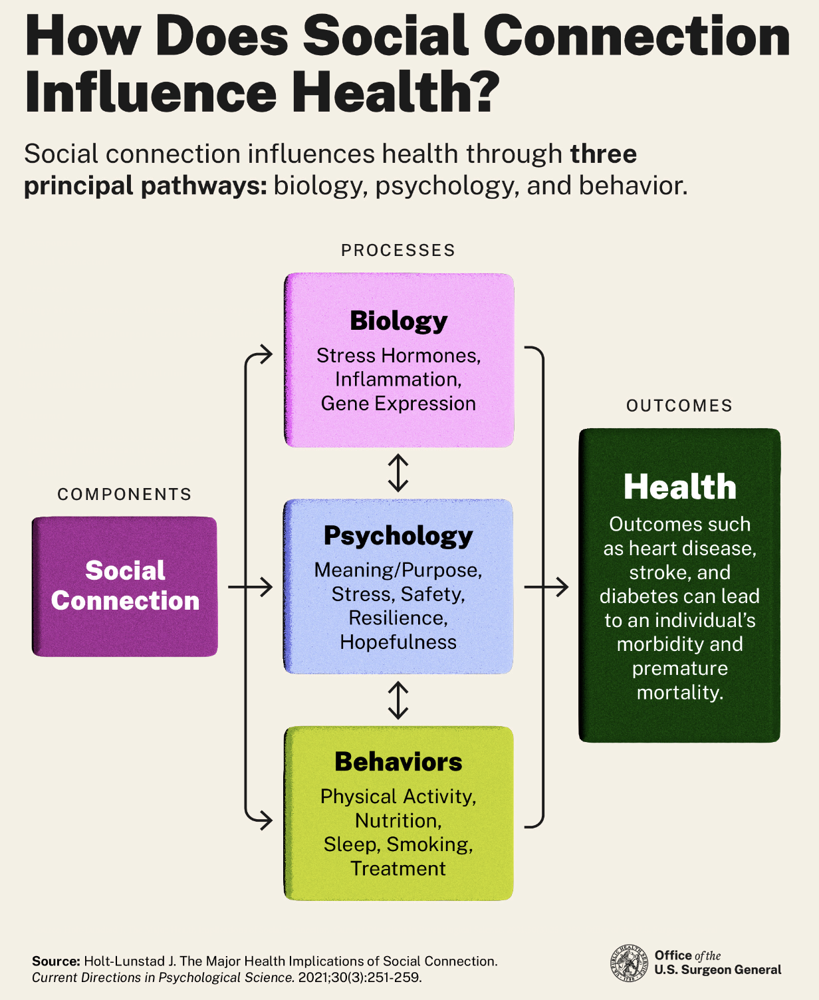
Year Review
The Social Cost of Intermittent Fasting (And How I Deal With It) | Sarah's Fasting Journal
I live in Austin. We have amazing food here. My friends love brunch. And I'm over here like 'yeah, I can't eat until 2 PM.'
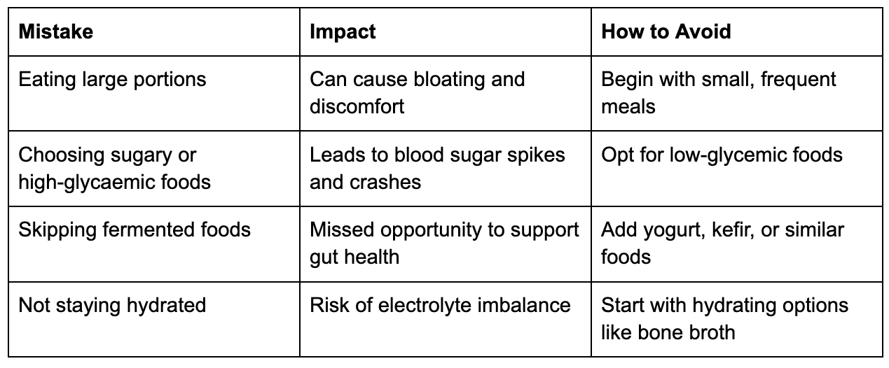
Year Review
What Breaking My Fast With Different Foods Did to My Energy | Sarah's Fasting Journal
I ran a completely unscientific experiment for two weeks. Same fasting protocol, same sleep, same workout. The only variable: what I ate to break my f...

Year Review
I Tracked My HGH and BDNF Levels for 60 Days of Fasting. The Numbers Are Real.
220% HGH increase. 28% BDNF boost. Blood tests don't lie. My brain was literally growing on a fasting schedule.
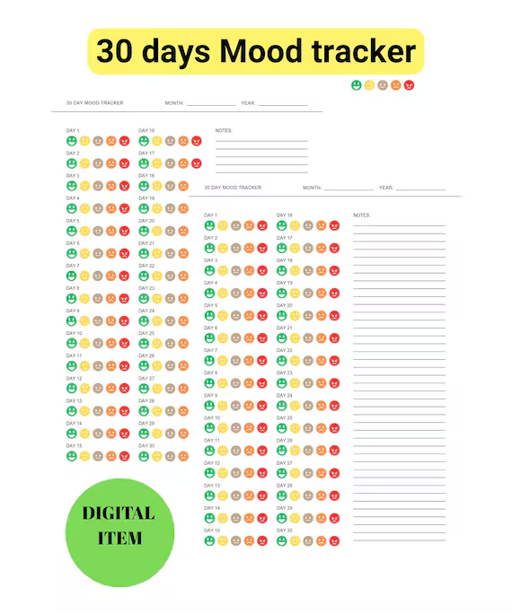
Year Review
I Tracked My Mood for 30 Days of Fasting. Here's the Chart. | Sarah's Fasting Journal
Week 1 average mood: 6.2. Week 3 average mood: 7.8. The trend is hard to ignore.

Year Review
What a 7-Day Digital Detox + Fast Did to My Anxiety (And My Screen Time)
No screens. No food until 2 PM. I spent three days staring at walls like a caged animal. Then something shifted.
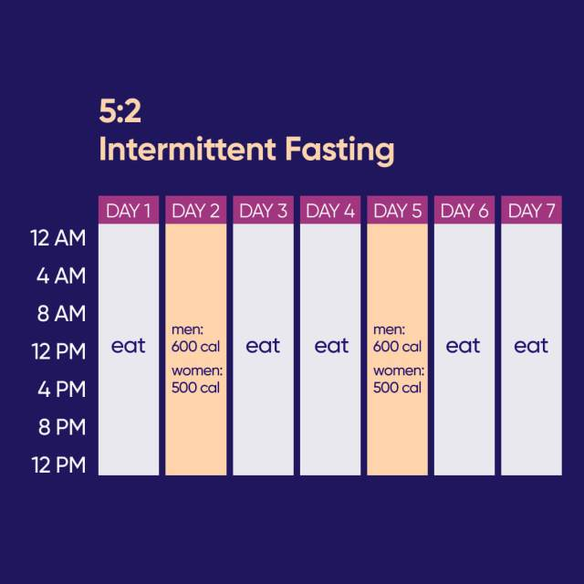
Year Review
Why I Switched From 16:8 to 18:6 (And Never Looked Back) | Sarah's Fasting Journal
I ran this experiment for two weeks: 7 days of 16:8, 7 days of 18:6, same calories, same foods. The data was annoying.
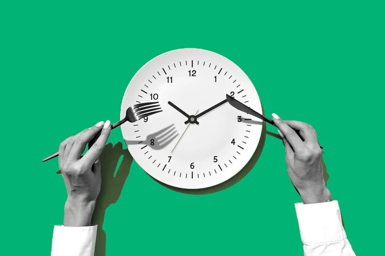
Year Review
The Day I Accidentally Did a 36-Hour Fast (And Survived) | Sarah's Fasting Journal
By 9 PM, I had officially hit 24 hours. I remember texting my friend: 'I think I accidentally did a full day fast.'

Year Review
I Tried OMAD for 14 Days in Austin. My Social Life Nearly Died.
One meal a day. In a city that runs on brunch and happy hour. I learned that OMAD requires social sacrifice.
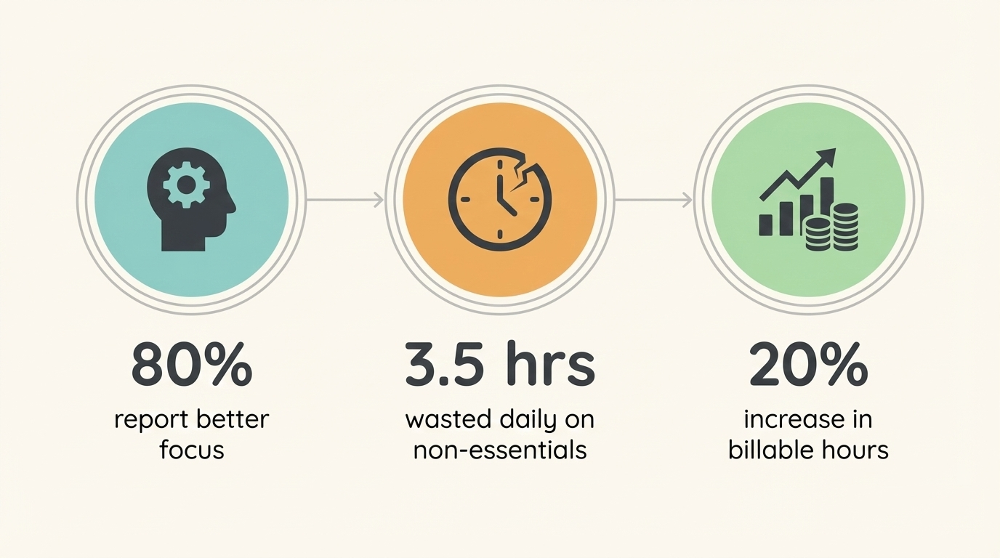
Year Review
Why I Started Tracking Every Single Hour of My Fast (And What I Discovered) | Sarah's Fasting Journal
I thought I was 'pretty consistent' until I saw the numbers — and I was only hitting my target about 60% of the time. Brutal.

Year Review
How I Use the FastingTool Calculator to Plan Around ACL Festival (Without Gaining 5 Lbs)
Ten days of music, heat, and food trucks. I shifted my eating-window-planner, set a maintenance goal, and came home at the same weight.

Year Review
My 2-Year Fasting Anniversary: What 730 Days of Data Actually Looks Like
22 pounds lost. HbA1c from 5.7 to 5.2. 730 sessions logged. The data doesn't judge. It just shows what happened.